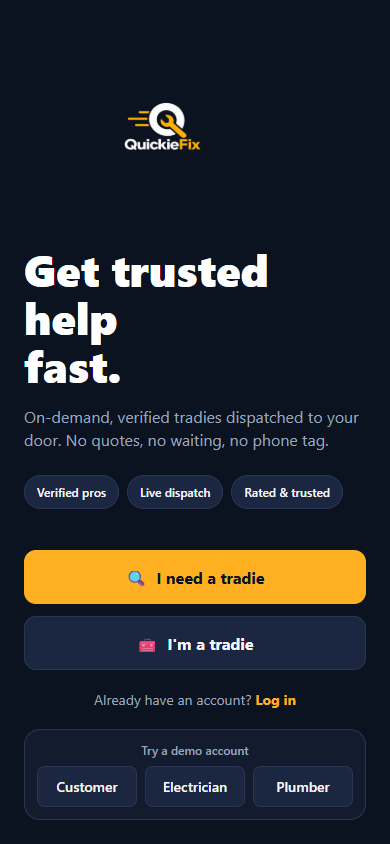
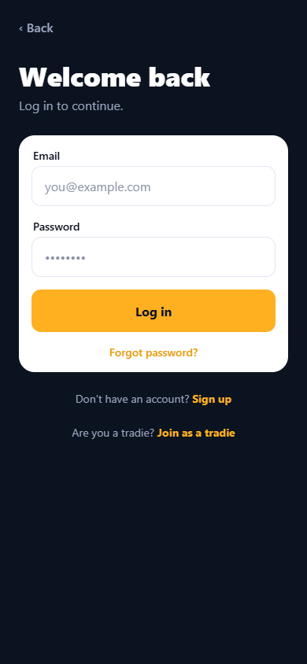
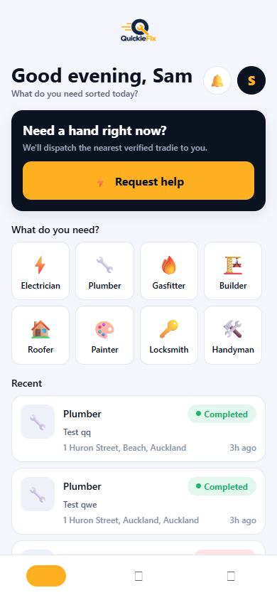
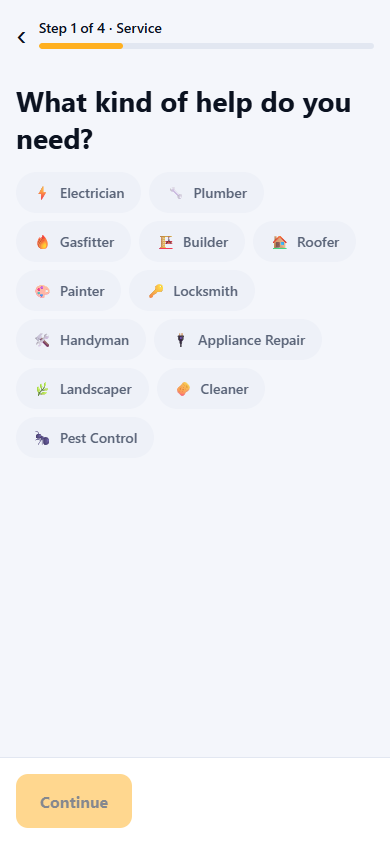
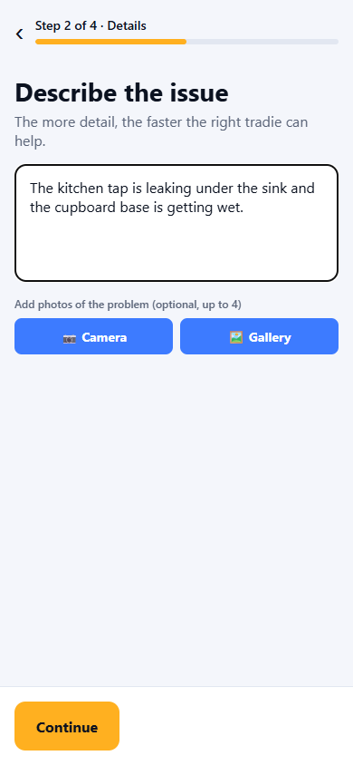
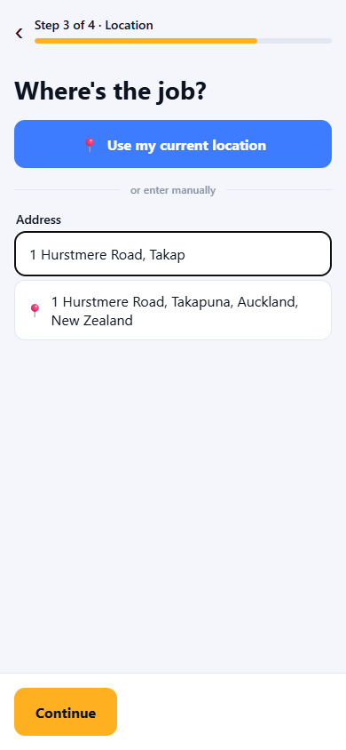
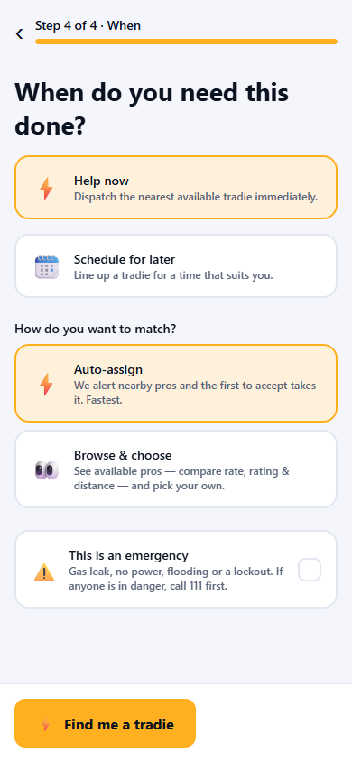
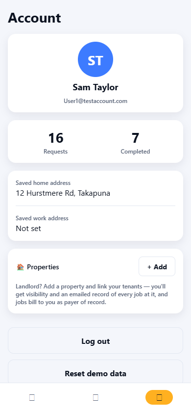

QuickieFix — Customer User Manual
On-demand, verified tradies dispatched to your door.
Contents
- What QuickieFix does
- Installing and signing up
- Signing in, security and biometrics
- Your home screen
- Requesting a tradie — step by step
- Auto-assign vs Browse & choose
- Emergencies
- Tracking your job
- Messaging your tradie
- Job completion, your confirmation code and invoicing
- Ratings and reporting a problem
- Your account
- Notifications and emails you'll receive
- Privacy and data retention
- Rules to know
- Troubleshooting & FAQ
1. What QuickieFix does
QuickieFix connects you with verified, licensed tradies in minutes — no quotes, no waiting, no phone tag. You describe the problem, we alert the closest available pros, and you watch your tradie travel to your door in real time.
Trades available: ⚡ Electrician · 🔧 Plumber · 🔥 Gasfitter · 🏗️ Builder · 🏠 Roofer · 🎨 Painter · 🔑 Locksmith · 🛠️ Handyman · 🔌 Appliance Repair · 🌿 Landscaper · 🧽 Cleaner · 🐜 Pest Control
Every tradie on the platform is admin-verified before they can receive a single job. Regulated trades (electricians, plumbers, gasfitters, builders) must hold a valid licence.
QuickieFix is not an emergency service. If there is a fire, a gas leak you can smell, risk of electrocution, or any danger to life — call 111 first.
2. Installing and signing up
Android
- On your phone, open https://quickiefix.app/download — this always serves the newest version.
- Tap the downloaded file and allow the installation when prompted.
- Open QuickieFix.
Web (laptop or desktop)
Open https://quickiefix-app.web.app in any modern browser. The web app mirrors the phone app.
Creating your account
- On the welcome screen ("Get trusted help fast."), tap 🔍 I need a tradie.
- Fill in your first name, last name, email and a password (minimum 6 characters).
- Tap Create account. You're in — no approval wait for customers.
Already registered? Tap Already have an account? Log in.

The welcome screen — start here.
3. Signing in, security and biometrics
- Log in with your email and password. Forgot it? Tap Forgot password? — a branded reset email arrives with a Reset my password button.
- The app signs you out whenever it is fully closed (banking-style security). Returning users land straight on the login page.
- Fingerprint / face unlock: turn on Biometric unlock in your Account tab. From then on, opening the app shows a lock screen — one scan and you're back in, no password typing. You can always tap Use password instead.
- Briefly hopping to another app (e.g. Maps) and back within a minute never signs you out.

The login screen — with sign-up and tradie links below.
4. Your home screen
From top to bottom:
| Element |
What it does |
| QuickieFix logo |
Brand header |
| Greeting ("Good morning, Sam") |
With "What do you need sorted today?" |
| 🔔 Bell |
Badge shows your active jobs; tap for your Activity list |
| Avatar |
Opens your Account tab |
| ⚡ Request in progress banner |
Appears when a job is live — Continue to track it or Cancel |
| "Need a hand right now?" card |
⚡ Request help starts a new request |
| What do you need? |
Trade tiles — tap one to start a request with that trade pre-selected |
| Recent |
Your last completed/cancelled jobs |
Bottom tabs: Home · Activity · Account.

Your home screen: request button, trade tiles and recent jobs.
5. Requesting a tradie — step by step
Tap ⚡ Request help (or a trade tile). The wizard has 4 steps with a progress bar.
Step 1 — Service
Pick the trade you need. Tap Continue.

Step 1 — all twelve trades.
Step 2 — Details & photos
- Describe the issue (at least 5 characters). Example: "My hot water cylinder is leaking in the garage." The more detail, the faster the right tradie can help.
- Add up to 4 photos (optional but highly recommended): tap 📷 Camera to take one or 🖼️ Gallery to attach existing photos. Remove a photo with the small ✕ on its corner. Tradies see your photos before deciding — good photos get faster, better-matched responses.

Step 2 — description plus camera/gallery photo buttons.
Step 3 — Location
Three ways to set the address:
- Your properties (if you've added any — see the Property Manager manual): tap the property and the address fills itself.
- 📍 Use my current location — GPS pins your exact position.
- Type the address — after 3 characters, live address suggestions appear (New Zealand addresses only). Pick one and you'll see "✓ Location pinned — tradies see exact distance": your job now carries exact coordinates, which means accurate distance ranking, accurate ETAs and a working map.

Step 3 — start typing and pick from live NZ address suggestions.
Step 4 — When & matching
- ⚡ Help now or 🗓️ Schedule for later.
- How do you want to match? — see section 6.
- ⚠️ This is an emergency — see section 7.
Tap ⚡ Find me a tradie (auto) or 👀 Browse tradies (browse) to submit.

Step 4 — urgency, matching mode and the emergency option.
Leaving mid-request? The app warns you: "Discard this request?" so a half-filled form is never lost by accident.
6. Auto-assign vs Browse & choose
|
⚡ Auto-assign (default) |
👀 Browse & choose |
| How it works |
We alert nearby pros; the first to accept takes the job |
You see a live list of available pros and pick your own |
| Speed |
Fastest |
You control the pace |
| Who is alerted |
The nearest 3 tradies first, widening to 8, then all (so the closest get first shot) |
Available tradies appear automatically; busy tradies are invited and appear if they opt in |
| What you compare |
Nothing to do — sit back |
Rate, star rating, jobs completed and distance per tradie |
| Locking in |
First accept = locked in. You're notified: "✅ Tradie found!" |
You tap Choose this tradie → they get a final accept prompt → locked in |
In Browse mode:
- The list is sorted nearest-first. Each card shows the business name, rating, completed jobs, distance/ETA and hourly rate.
- Tradies who put their hand up show a "responded" badge; you'll also get a push: "👀 A tradie is keen on your job".
- Tradies can ask you questions before you choose — a "💬 … asked you a question" banner appears at the top; answer right there, or tap View tradie to see their profile.
- Until you choose, no tradie can take your job — they can only express interest.
- If your pick declines, you're back at the list to choose someone else.
7. Emergencies
Tick ⚠️ This is an emergency for gas leaks, no power, flooding or lockouts.
- A safety banner appears: "Is anyone in danger?" with a 📞 Call 111 now button. QuickieFix is not an emergency service.
- Emergencies are always auto-assigned (browse is disabled — no time to shop around).
- Tradies receive a distinct 🚨 Emergency job alert.
8. Tracking your job
Submitting takes you straight to the live tracking screen. What you'll see, in order:
- Finding you a tradie — a live search card. Watch the search widen: "Alerting the closest pros…" → "Widening the search…" → "Reaching every nearby pro…". Most jobs match within a few minutes. If genuinely no one is available, you'll see "No tradie found" with a Try again button — our team is also alerted.
- ✅ Confirmed — your tradie is locked in. You'll see their profile card (rating, completed jobs, licence badge) and the rates that now apply — the hourly rate and any call-out fee are snapshotted at this moment and can't change mid-job.
- 🚗 On the way — the banner shows "📍 Live · 3.2 km away · arriving in about 8 min", tracking the tradie's actual phone as they drive. The map shows your address pin and an amber dot moving toward it (Uber-style). Distances/ETAs update as they move.
- 🛠️ On site — they've arrived and are working. Arrival is detected automatically by GPS.
- ✅ Completed — see section 10.
Your request card (description, address, photos) and a progress timeline with timestamps sit at the bottom of the screen.
Cancelling: tap Cancel job any time before completion. The tradie is notified.
9. Messaging your tradie
- Tap the 💬 icon in the tracking screen header to open the job's message centre — the job description and photos sit at the top for context, the conversation below.
- Before a tradie is assigned (browse mode), candidates can ask you questions and you can answer — it's the same thread.
- Contact details are masked: phone numbers, emails and social handles are automatically hidden in messages, for everyone's safety. Keep it on QuickieFix.
- 🧹 Messages are deleted automatically when the job closes (completed or cancelled). Photos are deleted 24 hours after the job ends.
10. Job completion, your confirmation code and invoicing
When the work is done, the tradie completes the job with you present:
- They confirm the invoice contact name and email with you (prefilled from your account — correct it on the spot if the invoice should go elsewhere, e.g. to your landlord or office).
- The moment they mark it complete, QuickieFix generates a unique confirmation code — format
QF-XXXXXX — created by our servers and impossible for anyone to alter.
- You receive a completion record email with the code and the exact rates that applied (hourly rate, call-out fee).
How payment works: QuickieFix takes no payment in the app. The tradie invoices you directly at the rates you saw when they were confirmed. Quote the QF- code on any invoice query — it's your shared, tamper-proof record of the job.
The tracking screen also shows a job summary: total time, time on site, and the code.
11. Ratings and reporting a problem
- After completion, rate your tradie: 1–5 stars plus quick tags (Professional, Friendly, On time, Excellent workmanship, Would recommend) and an optional review. Ratings keep the platform honest — they're aggregated by our servers and can't be faked.
- The tradie rates you too (privately) on things like communication and access.
- Something wrong? Tap Report a problem on the completed job, enter a subject and the details, and Submit complaint. Our team reviews every complaint and will be in touch.
12. Your account
Account tab, from top to bottom:
- Profile — your name, email and request/completed counts.
- Saved addresses — home and work.
- 🏠 Properties — landlord features: add properties, link tenants, see jobs at your properties. Covered fully in the Property Manager & Landlord User Manual.
- Biometric unlock — fingerprint/face sign-in toggle.
- Log out — signs out fully and stops notifications to this device.

The Account tab — profile, addresses, properties and security.
13. Notifications and emails you'll receive
| Event |
Notification |
| A tradie expressed interest (browse) |
👀 "A tradie is keen on your job" |
| Tradie locked in |
✅ "Tradie found! … will head over shortly" |
| Tradie sets off |
🚗 "On the way" |
| Job completed |
📧 Completion record email with your QF- code and rates |
| Password reset requested |
📧 Reset email with a secure link |
Tapping any job notification opens the job directly. Notification badges clear automatically when you open the app.
14. Privacy and data retention
| Data |
Policy |
| Messages |
Deleted automatically the moment a job completes or is cancelled |
| Job photos |
Deleted automatically 24 hours after the job ends |
| Your exact address |
Shown to a tradie only once the job is theirs. Before that, candidates see only the suburb/area and rough distance |
| Contact details in chat |
Automatically masked |
| Completion codes & job records |
Kept permanently as your invoice reference |
| Rates |
Snapshotted at confirmation — cannot change mid-job |
15. Rules to know
- One live job per trade. You can't have two plumbing jobs running at once — track or cancel the current one first. You can run a plumbing job and an electrical job side by side.
- Emergencies are always auto-assigned.
- Rates are locked at confirmation. What you saw is what applies.
- The app signs out when fully closed. Turn on biometrics for one-touch return.
16. Troubleshooting & FAQ
The search is taking a while.
The search widens automatically — nearest 3 pros first, then 8, then everyone in range. Most jobs match in minutes. If no one accepts, you'll be told clearly and can retry.
Can I choose a specific tradie?
Yes — pick 👀 Browse & choose in Step 4. Not available for emergencies.
Why can't I create a second plumbing job?
One live job per trade. Finish or cancel the current plumbing job first (other trades are unaffected).
Why can't I see the tradie's phone number?
All contact stays in-app until a job is confirmed — messages are masked to protect both sides. Once the tradie is assigned and en route, you can coordinate through the in-app chat.
I was asked for my fingerprint twice / the app logged me out.
Fully closing the app ends the session by design. Enable Biometric unlock in Account for one-scan re-entry.
Where's my invoice?
The tradie invoices you directly. Your completion email contains the rates and your QF- confirmation code — quote it in any query.
The map isn't showing.
The embedded map needs app version 1.2.0 or later — update via https://quickiefix.app/download.
QuickieFix · On-demand, verified tradies · quickiefix.app